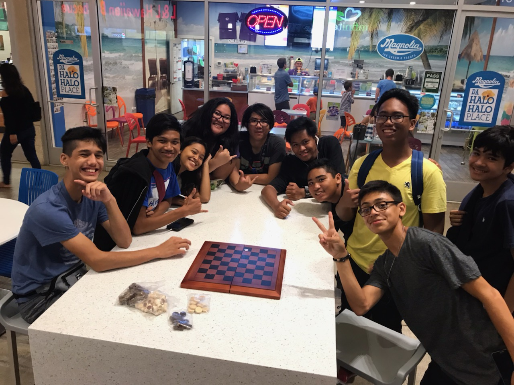

Friends and Family
with them on my birthday.


Hobbies
I usually play video games often with friends as a means to use time unless I have work I need to resolve. I usually play video games such as Hearthstone, League/Mobile Legends, SSBU, Etc.,. If it's neither to all of these, I'm usually practicing chess since I partake in games of wits ends, "chess".
Goals
Particularly, I don't have goals for neither APCSP nor my whole sophomore year besides pass with an above average grade. I try to do my best for each project, present or upcoming projects. I do plan on finishing this current website project with a clean aesthetic and finely tuned coding but it's quite difficult at most times.